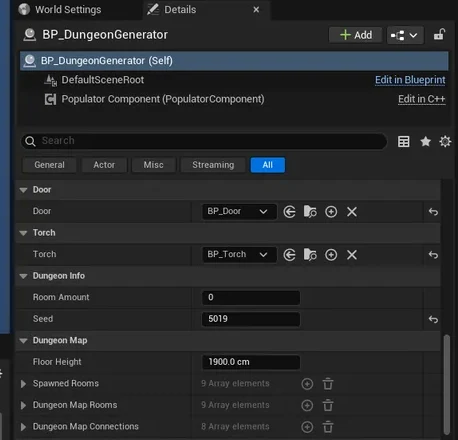
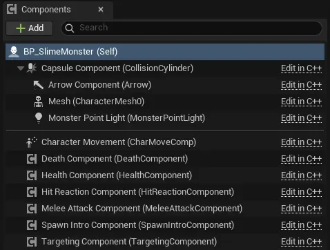
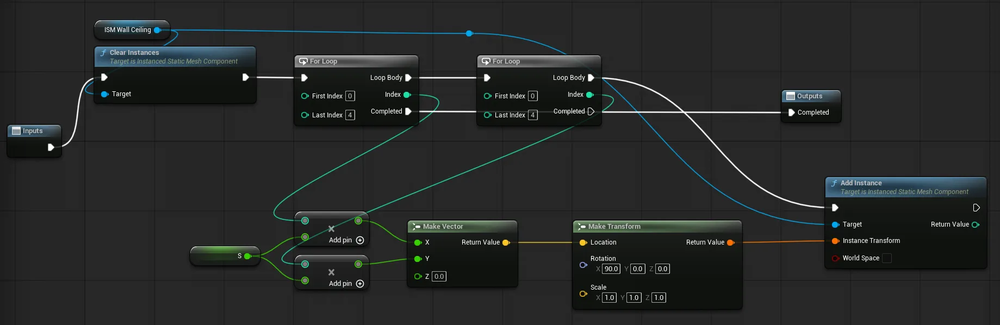

로그라이크의 던전 생성 방식을 직접 구현하며 Unreal Engine 5를 학습한 개인 프로젝트입니다. 미리 제작한 방을 출구 위치에 맞춰 연결하고, 시드로 생성 결과를 재현하도록 구성했습니다. AI를 활용하는 과정에서는 구현을 맡길 범위와 직접 이해하고 설계할 범위를 정하는 데 중점을 두었습니다.
던전 생성부터 몬스터·아이템 배치, 전투와 상호작용, 탈출까지 이어지는 플레이 흐름을 구현했습니다.
시작 방에서 출발해 일반 방을 이어 붙이고, 탈출방 하나와 막다른 특수방을 배치한 뒤 남은 출구를 벽으로 막고 이어진 자리에 문과 횃불을 놓습니다.
방에 놓인 마커를 모아, 종류와 태그에 맞는 테이블에서 확률과 보장 규칙에 따라 몬스터·상자·코인·함정을 바닥에 맞춰 놓습니다.
체력과 피격 처리를 컴포넌트로 분리해 플레이어와 몬스터에서 재사용할 수 있도록 구성했습니다. 몬스터의 등장 연출, 탐지, 근접 공격, 사망 처리도 각각의 컴포넌트가 담당합니다.
문·상자·코인의 접촉 반응과 층을 이동하는 엘리베이터, 왕복 운동으로 피해를 주는 함정을 구현했습니다.
던전 생성 방식을 선택할 때는 배치 규칙을 이해하고 이후에 직접 수정할 수 있는지를 기준으로 삼았습니다. 미리 제작한 방의 출구를 서로 맞추는 방식으로 구성해, 방의 위치와 회전은 출구의 위치·방향에 맞추고 기존 방과 겹치는 배치는 제외했습니다. 방 내부의 타일 배치와 별개로, 방을 연결하는 과정에는 그리드나 타일맵을 사용하지 않았습니다.
방·출구 선택과 스폰 확률 판정에는 SetSeed에서 초기화한 단일 난수 스트림을 사용했습니다. 탈출방은 남은 출구를 생성기에서 먼 순으로 정렬해 배치를 시도하고, 특수방은 배치 가능한 위치가 없으면 화면에 알린 뒤 생성을 계속하도록 했습니다.
새 방을 배치한 뒤 방의 겹침 검사 박스로 다른 액터와의 중첩을 확인합니다. 겹치는 방은 제거하고 다시 시도하며, 실패한 배치는 목표 방 개수에 포함하지 않습니다.
방 배치 후 오버랩 상태가 갱신될 시간을 두기 위해, 남은 출구를 막고 문·횃불을 배치하는 처리를 다음 틱의 단일 콜백으로 예약했습니다. 이후 콘텐츠 배치를 시작하도록 실행 순서를 정했습니다.
초기에는 생성기 하나가 방 연결과 몬스터·아이템 배치를 모두 처리했습니다. 콘텐츠 배치를 UDungeonPopulatorComponent로 분리해 생성기는 방의 연결과 출입구 처리를 담당하고, 배치 컴포넌트는 마커와 스폰 테이블을 이용하도록 변경했습니다. 방 연결 로직을 수정하지 않고 콘텐츠 배치 규칙을 조정할 수 있도록 책임을 나눴습니다.
처음에는 스폰 위치를 고정된 멤버 변수로 관리해 방마다 배치할 수 있는 개수가 정해져 있었습니다. 이를 방에 직접 배치하는 마커와 스폰 테이블로 분리해, 마커는 위치와 배치 조건을, 테이블은 생성할 콘텐츠의 후보를 정의하도록 변경했습니다.
마커에는 콘텐츠 종류, 배치 규칙, 생성 확률, 바닥에 맞춰 배치할지 여부를 설정합니다. 배치 규칙으로는 선택 배치, 필수 배치, 던전 또는 방마다 하나씩 배치하는 조건을 지정합니다.
마커에 태그가 있으면 태그별 테이블을, 없으면 콘텐츠 종류별 기본 테이블을 사용합니다. 방에 마커를 추가하거나 제거해 코드 수정 없이 스폰 위치와 개수를 조정할 수 있습니다.

방 개수, 시드, 층 높이 등의 설정을 생성기 액터의 디테일 패널에 노출해 코드 수정 없이 조정할 수 있도록 했습니다.
화면 하단의 Spawned Rooms와 Dungeon Map Connections는 생성된 방과 연결 정보를 보여줍니다. 동일한 설정에서 같은 시드를 입력하면 같은 던전 배치를 재현할 수 있어, 생성 결과를 확인하고 문제 상황을 다시 조사하는 데 활용했습니다.
초기 프로토타입의 수정에 한계를 느껴 생성 방식을 단순화하고, 직접 검토할 범위를 정한 과정입니다.
첫 프로토타입은 AI를 활용해 그리드 배치, Separation Steering, Delaunay 삼각분할, 최소 신장 트리를 결합한 구성이었습니다. 생성 결과는 나왔지만, 기능을 추가할수록 각 처리의 역할과 연결 관계를 이해하기 어려워졌습니다. 오류 메시지를 전달하고 수정된 코드를 실행하는 과정을 반복하면서도, 변경 이유와 영향 범위를 스스로 판단하지 못했습니다.
기존 프로토타입을 정리하고 출구를 맞춰 방을 연결하는 방식으로 다시 설계했습니다. 이때 알고리즘의 세부 구현을 모두 직접 작성하기보다, 역할과 입출력을 파악해 활용하는 부분과 클래스별 책임·호출 흐름을 직접 검토하는 부분을 구분했습니다. 이후에는 변경 이유와 영향 범위를 설명할 수 있는지를 기준으로 구조를 선택했습니다.
구현 전에 계획으로 방향을 맞췄고, 코드부터 쓰기 시작하면 되돌린 뒤 계획 · 검토 · 구현 순서로 다시 진행했습니다.
한 번에 전부 바꾸자는 안도 그대로 따르지 않고, 제 상황에 맞는 더 단순한 길을 골랐습니다.
동작 확인 후 클래스별 책임과 호출 흐름을 설명하도록 요청하고, 내용을 이해한 뒤 다음 단계로 진행했습니다.
일반 메시였을 때는 괜찮았다는 식의 단서를 주어 원인의 범위를 먼저 좁혔습니다.
AI를 활용하더라도 구조의 선택과 검토는 직접 맡아야 한다고 판단했습니다. 세부 구현을 맡기는 부분은 역할과 입출력을 확인하고, 기능을 연결하는 구조는 책임과 호출 흐름을 이해한 뒤 사용했습니다.
전투 구현 후 책임의 집중, 불필요한 상속 계층, 구체 타입에 대한 의존을 각각 검토하고 개선한 과정입니다.
구조를 검토할 때는 한 기능의 수정이 관련 없는 기능까지 영향을 주는지를 기준으로 삼았습니다. 여러 책임이 모인 클래스는 컴포넌트로 분리하고, 고유 동작이 없는 중간 클래스는 제거했으며, 서로 다른 대상의 공통 기능은 인터페이스로 정의했습니다.
초기 몬스터 클래스는 탐지·공격·등장 연출·사망·피격·체력을 함께 처리했습니다. 공격 타이밍을 수정할 때도 다른 기능의 코드가 섞인 클래스를 확인해야 했고, 공통 기능을 플레이어에서 재사용하기도 어려웠습니다. 각 책임을 컴포넌트로 분리해 액터는 컴포넌트 구성과 신호 중계를 담당하도록 변경했습니다.

분리한 여섯 컴포넌트는 블루프린트의 목록에서도 확인할 수 있습니다. 체력이나 피격처럼 공통으로 사용하는 기능을 몬스터 클래스에서 분리해, 해당 컴포넌트를 다른 액터에서도 재사용할 수 있도록 했습니다.
초기에는 방 종류마다 C++ 중간 클래스를 두고 멤버 변수의 값으로 구성을 구분했습니다. 고유 동작 없이 종류별 설정만 달라지는 클래스가 늘어나, 블루프린트가 방 베이스를 직접 상속하도록 정리했습니다. 방별 설정은 수정 가능한 컨테이너로 관리하고, 별도 동작이 필요한 방은 파생 클래스로 유지했습니다.
문·상자·코인은 서로 다른 오브젝트지만 접촉에 반응하는 공통 기능이 있습니다. 생성기와 플레이어가 구체적인 오브젝트 타입에 의존하지 않고 호출할 수 있도록, 인터페이스를 기능별로 나눠 각 대상에 필요한 것만 구현하도록 했습니다.
상자와 코인은 상호작용과 바닥에서 띄우기 기능이 모두 필요하므로 두 인터페이스를 구현하고, 함정은 바닥에서 띄우기 인터페이스만 구현합니다.
책임이 집중된 클래스에는 컴포넌트 분리를, 설정만 다른 방에는 데이터 구성을, 서로 다른 대상의 공통 기능에는 인터페이스를 적용했습니다. 클래스 수를 늘리거나 줄이는 것보다 변경되는 지점에 맞춰 책임을 나누는 데 중점을 두었습니다.
반복 타일을 메시 종류별로 묶고, 적용 중 발생한 문제를 일반 메시 구성과 비교하며 점검한 과정입니다.
예시 방 하나는 바닥 타일 25개와 벽·천장 타일 41개, 총 66개의 반복 타일로 구성했습니다. 당시 플레이 중 프레임 저하는 없었지만, 같은 메시를 반복 배치하는 구조에 인스턴싱을 적용해 보기로 했습니다.
바닥과 벽·천장을 메시 종류별로 묶어 Instanced Static Mesh(ISM) 컴포넌트 2개로 구성했습니다. 방 블루프린트의 Construction Script에서 격자 좌표를 계산하고, 각 위치에 인스턴스를 추가하도록 구현했습니다.
66은 타일 개수이고 2는 이를 관리하는 ISM 컴포넌트 개수입니다. 이 수치는 구성 변경을 설명하며, 드로우 콜이나 프레임 시간의 실측값은 아닙니다.
ISM 적용 후 에디터에서 방을 확인할 때 프레임 저하가 나타나, 일반 스태틱 메시 구성과 비교하고 인스턴스 개수를 확인했습니다. 이 과정에서 Add Instance 노드를 For Loop의 Completed 핀에 연결한 오류를 발견해 Loop Body 핀으로 수정했습니다. 수정한 그래프는 아래와 같이 반복 실행과 반복 완료의 경로를 구분한 구성입니다.

변경 전후의 구성을 비교하고 인스턴스 개수와 실행 핀 연결을 확인하며 문제 범위를 좁혔습니다. 이후에도 최근 변경한 부분부터 비교하고, 관찰한 결과를 바탕으로 다음 확인 대상을 정했습니다.